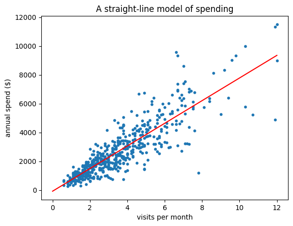

2. What does a model learn?#

In the previous chapter, we called fit and a model “learned”. But what does it learn, and how does it decide
that one rule is better than another? In this chapter, we answer these questions with the simplest model there is:
a straight line. We also see, again, that the work is done on whole columns of numbers at once.
In this chapter, you will learn to:
explain that a model is a rule with numbers in it, and that learning means choosing those numbers;
measure how good a rule is with the average squared error;
explain what
LinearRegression().fitdoes: it finds the numbers that make the average squared error as small as possible.
import pandas as pd
import matplotlib.pyplot as plt
from sklearn.linear_model import LinearRegression
DATA_URL = "https://raw.githubusercontent.com/y-rosenthal/yr-pre-ml/main/data/"
customers = pd.read_csv(DATA_URL + "customers.csv")
customers[["visits_per_month", "annual_spend"]].head()
| visits_per_month | annual_spend | |
|---|---|---|
| 0 | 5.6 | 3577.54 |
| 1 | 2.4 | 1915.38 |
| 2 | 3.1 | 1462.89 |
| 3 | 11.9 | 4870.25 |
| 4 | 1.5 | 977.17 |
In Thonny: wrap the last line of a cell in
print()to see its value, for exampleprint(customers[["visits_per_month", "annual_spend"]].head()).
We use the same customers as before, but only two columns: how often a customer visits the store each month, and how much they spend in a year. Our question: can we predict a customer’s yearly spending from their visits?
2.1. A model is a rule with numbers in it#
Customers who visit more often probably spend more. A simple rule could be:
spending = a + b × visits
Here a and b are numbers that we have not chosen yet. b says how many dollars of yearly spending each visit
per month adds, and a is a starting amount. A model is such a rule, and the numbers in it are the model’s
parameters. Learning means choosing the parameters.
2.2. A first guess#
Let’s guess. Say a = 0 and b = 700: each visit per month adds $700 a year. We can compute the guess for all 500
customers at once, with one line:
guess = 0 + 700 * customers["visits_per_month"]
guess.head()
0 3920.0
1 1680.0
2 2170.0
3 8330.0
4 1050.0
Name: visits_per_month, dtype: float64
700 * customers["visits_per_month"] multiplies every value of the column by 700. We did not write a loop.
This way of computing on a whole column at once is the main idea of NumPy and pandas, and the next chapters teach
it.
How far off is each guess? The error of a prediction is the real value minus the prediction:
errors = customers["annual_spend"] - guess
errors.head()
0 -342.46
1 235.38
2 -707.11
3 -3459.75
4 -72.83
dtype: float64
Some errors are positive (we guessed too low), and some are negative (we guessed too high).
2.3. One number for how good a rule is#
We want one number that says how good the whole rule is. The average of the errors does not work: positive and negative errors cancel out, and a bad rule can have an average error near 0.
The usual fix is to square each error before we average. A square is never negative, so nothing cancels. And a big error counts much more than a small one: an error of 10 counts 100, but an error of 1000 counts 1,000,000. The result is the average squared error, also called the mean squared error (MSE):
(errors ** 2).mean()
np.float64(1021592.459521)
The number is huge, because it is in “squared dollars”. That does not matter: we use it only to compare rules. A smaller average squared error means a better rule.
Note: Colab shows the result as
np.float64(1021592.459521).np.float64means “a decimal number, stored by NumPy” (pandas uses NumPy inside). The number itself is 1021592.459521, andprint()shows just that. The chapter Indexing, slicing and arithmetic says more about this form.
Let’s put the steps in a function, so that we can try other values of a and b quickly:
def average_squared_error(a, b):
prediction = a + b * customers["visits_per_month"]
errors = customers["annual_spend"] - prediction
return (errors ** 2).mean()
average_squared_error(0, 700)
np.float64(1021592.459521)
2.4. Searching for better numbers#
Now we can try several values of b (and keep a = 0), and see which one is best:
for b in [500, 600, 700, 800, 900]:
print(b, round(average_squared_error(0, b)))
500 2219223
600 1444407
700 1021592
800 950779
900 1231967
The error goes down, then up again. Among these values, b = 800 is the best. We could go on trying values for
a and b, but that is slow. There is a better way.
Try it: try
a = 300with a few values ofb. Can you find a pair with a smaller error than(0, 700)?
2.5. What fit does#
LinearRegression does exactly this search, but very fast and very precisely: it finds the a and b that make
the average squared error as small as possible. The quantity that a model makes small is called its objective
function (or loss). For linear regression, it is the average squared error.
Let’s fit it. scikit-learn wants the predictors as a table (X, with double brackets) and the target as one column
(y):
X = customers[["visits_per_month"]]
y = customers["annual_spend"]
model = LinearRegression()
model.fit(X, y)
print("a =", model.intercept_)
print("b =", model.coef_[0])
a = -74.81941370511913
b = 785.6431503491374
The model chose a small negative starting amount a, and a b of about 786 dollars per visit. (In
scikit-learn, a is called the intercept and b the coefficient.) Let’s check that these numbers beat our
guess:
average_squared_error(model.intercept_, model.coef_[0])
np.float64(933707.4061757856)
It is smaller than the error of every guess above. No other straight line has a smaller average squared error for these customers.
2.6. A picture of the rule#
A chart makes the rule easy to see. Each dot is one customer, and the line is the model’s rule. (We use matplotlib here without explaining every line; the chapter Grouping and summarizing shows how to draw charts.)
line_x = pd.Series([0, 12])
line_y = model.intercept_ + model.coef_[0] * line_x
plt.scatter(customers["visits_per_month"], customers["annual_spend"], s=10)
plt.plot(line_x, line_y, color="red")
plt.xlabel("visits per month")
plt.ylabel("annual spend ($)")
plt.title("A straight-line model of spending")
plt.show()

The line follows the general trend, but many dots are far from it. Visits alone do not explain spending: the size of the basket matters too, and the line does not know about it. The previous chapter used all the predictors, and other models.
2.7. Other models learn other numbers#
Every model is a rule with parameters, and fit chooses the parameters to make an objective function small:
Linear regression with several predictors chooses one number for each predictor (spending = a + b × visits + c × basket + …), again to make the average squared error as small as possible.
A decision tree chooses its yes/no questions (“is visits_per_month above 4.5?”) and the prediction at the end of each path. scikit-learn’s
DecisionTreeRegressoralso chooses them to make the squared error small.A random forest builds many trees in this way and averages them.
In the previous chapter, we compared models with the mean absolute error (MAE), not the squared error. That is common: for predicting numbers, models are often trained with the squared error, which is easy to work with mathematically, and reported with the MAE, which is in dollars and easy to explain to a manager.
2.8. The point, again#
Look at what this chapter computed: 700 * customers["visits_per_month"], customers["annual_spend"] - guess,
errors ** 2, .mean(). Each one is arithmetic on a whole column of numbers at once. That is exactly what
NumPy and pandas do, and what every model does inside fit. The next chapter starts with NumPy.
2.9. Summary#
A model is a rule with numbers in it, its parameters. For a straight line: spending = a + b × visits.
The error of a prediction is the real value minus the predicted value.
The average squared error (MSE) measures how good a rule is: square each error, then average. Smaller is better.
fitchooses the parameters that make the model’s objective function small. ForLinearRegression, it finds thea(intercept_) andb(coef_) with the smallest average squared error.For predicting numbers, models are often trained with the squared error and reported with the MAE.
2.10. Practice questions#
2.10.1. Question 1 (Easy)#
In the rule spending = a + b × visits, what are the parameters, and what does fit do with them?
Answer
The parameters are a and b. fit chooses their values: the values that make the average squared error on
the data as small as possible.
# Write your answer here
2.10.2. Question 2 (Easy)#
Why do we square the errors before we average them?
Answer
Positive and negative errors would cancel out in a plain average, so a bad rule could look good. Squares are never negative, so nothing cancels. Also, squaring makes big errors count much more than small ones.
# Write your answer here
2.10.3. Question 3 (Medium)#
Three predictions have the errors 10, -10 and 40. Compute the average error and the average squared error by hand, then check them with Python.
Answer
The average error is (10 - 10 + 40) / 3 = 13.33. The average squared error is (100 + 100 + 1600) / 3 = 600.
errors3 = pd.Series([10, -10, 40])
print(errors3.mean())
print((errors3 ** 2).mean())
# Write your answer here
2.10.4. Question 4 (Medium)#
Use the function average_squared_error to compare the rules a = 200, b = 650 and a = -200, b = 750. Which one
is better?
Answer
The rule with the smaller average squared error is better. Here it is a = -200, b = 750.
print(average_squared_error(200, 650))
print(average_squared_error(-200, 750))
# Write your answer here
2.10.5. Question 5 (Medium)#
Use the fitted model to predict the yearly spending of a customer who visits 6 times a month. Use its numbers
model.intercept_ and model.coef_[0].
Answer
Put 6 into the rule: spending = a + b × 6.
model.intercept_ + model.coef_[0] * 6
# Write your answer here
2.10.6. Question 6 (Hard)#
Fit a straight-line model that predicts annual_spend from avg_basket instead of from visits_per_month. First
remove the rows that have a missing value (some avg_basket values are missing, and fit refuses them):
with_basket = customers.dropna(). Print the model’s a and b. What does b mean in words?
Answer
a is about -285 and b about 59.8. b is the number of extra dollars of yearly spending for each extra
dollar in the average basket: each extra dollar in the average basket goes with about $60 more spending a year.
with_basket = customers.dropna()
basket_model = LinearRegression()
basket_model.fit(with_basket[["avg_basket"]], with_basket["annual_spend"])
print("a =", basket_model.intercept_)
print("b =", basket_model.coef_[0])
# Write your answer here
2.10.7. Question 7 (Challenge)#
Without LinearRegression, search for a good b yourself: keep a at the value the model found, try every b
from 600 to 800 in steps of 10, and print the b with the smallest average squared error. Is it close to the
model’s b?
Answer
Yes: the best b is 790, and the model’s b is about 785.6. Keep the best b so far while you loop. The best
b in steps of 10 is the multiple of 10 nearest to the model’s b.
best_b = None
best_error = None
for b in range(600, 810, 10):
error = average_squared_error(model.intercept_, b)
if best_error is None or error < best_error:
best_b = b
best_error = error
print(best_b, model.coef_[0])
# Write your answer here